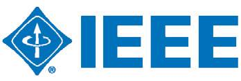
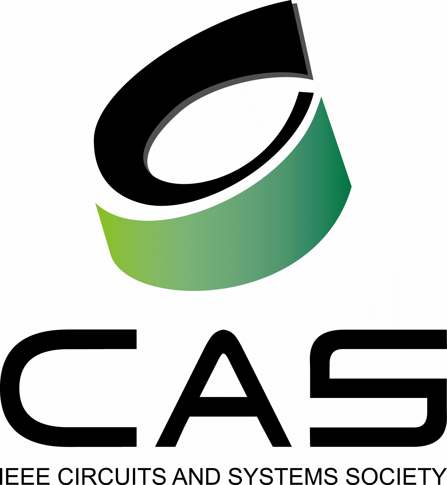
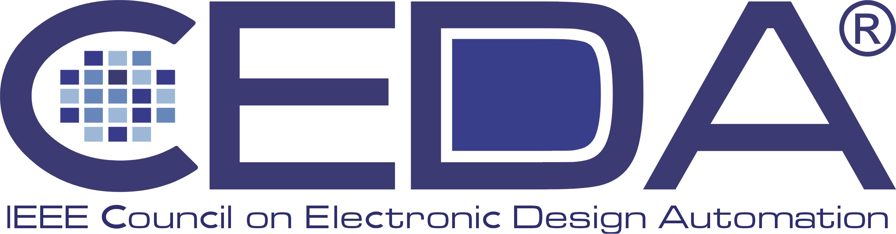
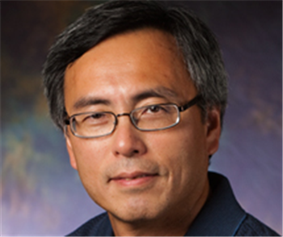
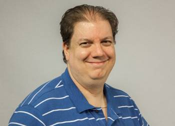
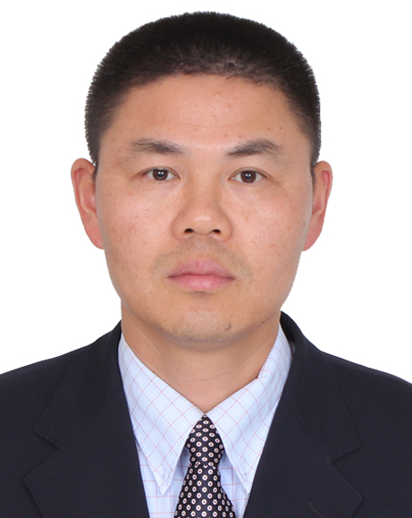
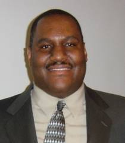

|


Sponsored By:


Technical Co-Sponsors:


|
Keynote 1: 9:00am ~ 9:45am, Monday, July 11, 2016
“Putting the Star in EDA, E*A”
Sani R. Nassif

CEO, Radyalis LLC
Abstract:
No fields in Engineering have had the sustained exponential that
was Moore’s Law. One of the outcomes is a rich culture of “using
computers to automate the design of computers”, namely EDA,
which has had to rapidly adapt to ever larger complexity. But
with Moore’s era now over, it is time to apply the energy of the
EDA community to other areas. This talk will explore the
application of EDA techniques and knowhow to the area of Cancer
Radiation Therapy.
Short Bio:
Sani
received his Bachelors degree with Honors from the
American University of Beirut in 1980, and his Masters
and PhD degrees from Carnegie-Mellon University in 1981
and 1986 respectively. He then worked for ten years at
Bell Laboratories in the general area of technology CAD,
focusing on various aspects of design and technology
coupling including device modeling, parameter
extraction, worst case analysis, design optimization and
circuit simulation. While at Bell Labs, working under
Larry Nagel -the original author of Spice, he led a
large team in the development of an in-house circuit
simulator, named Celerity, which became the main circuit
simulation tool at Bell Labs.
In January 1996, he joined the then newly formed IBM
Austin Research Laboratory (ARL), which was founded with
a specific focus on research for the support of IBM's
Power computer systems. After twelve years of
management, he stepped down to focus on technical work
again with an emphasis on applying techniques developed
in the VLSI-EDA area to IBM's Smarter Planet initiative.
In January 2014 Sani founded Radyalis, a company focused
on applying VLSI-EDA techniques to the field of Cancer
Radiation Therapy. In October 2015, Radyalis announced
that it has closed a deal with LSI software to license
its flagship Monte Carlo particle therapy simulator.
Sani has authored one book, many book chapters, and
numerous conference and journal publications. He has
delivered many tutorials at top conferences and has
received Best Paper awards from TCAD, ICCAD, DAC, ISQED,
ICCD and SEMICON, authored invited papers to ISSCC, IEDM,
IRPS, ISLPED, HOTCHIPS, and CICC. He has given Keynote
and Plenary presentations at Sasimi, ESSCIRC, BMAS,
SISPAD, SEMICON, VLSI-SOC, PATMOS, NMI, ASAP, GLVLSI,
TAU, and ISVLSI. He is an IEEE Fellow, was a member of
the IBM Academy of Technology, a member of the ACM and
the AAAS, and an IBM master inventor with more than 75
patents.
Dr. Nassif was the president of the IEEE Council on EDA
(CEDA) for 2014 and 2015, was the General chair of the
ICCAD conference in 2008, and has served on the
technical program committees of ICCAD, DAC and other
conferences. He received the Penrose award (given to one
outstanding graduate from the American University of
Beirut), the Distinguished Member of Technical Staff
award from Bell Labs, three Research Accomplishment
Awards from IBM, and the SRC Mahboob-Khan Outstanding
Mentor awards from the SRC.
Keynote 2: 9:00am ~
9:45am, Tuesday, July 12, 2016
Lithography-Aware Physical Design
Martin D. F. Wong

Professor, Executive Associate Dean, College of Engineering
Department of Electrical and Computer Engineering
University of Illinois at Urbana-Champaign
Abstract
Lithography continues to be
the backbone of circuit fabrication. In advanced IC technology
nodes (20nm and beyond), manufacturing (i.e., lithography) has
become the bottleneck for the chip design process. Design for
manufacturing (DFM) is no longer an option but a necessity.
Since physical design determines the locations and geometries of
all the transistors and wires, it must understand the
down-stream lithography process so that the layout patterns
generated are printable on silicon. This is a challenging
problem and the requirements oftentimes are non-intuitive to the
designers. In this talk, we give an overview of our work on
lithography-aware physical design for several leading
next-generation lithography (NGL) technologies. The NGL
technologies we consider include triple-patterning lithography (TPL),
self-aligned double patterning (SADP), directed self-assembly (DSA)
and extreme ultraviolet (EUV) lithography.
Short Bio
Martin D. F. Wong is the
Executive Associate Dean of the College of Engineering in the
University of Illinois at Urbana-Champaign (UIUC). He is also
the Edward C. Jordan Professor of Electrical and Computer
Engineering. He received his Ph.D. in computer science from UIUC
in 1987. Prof. Wong is internationally known for his research on
computer-aided design (CAD) methods for very-large-scale
integrated circuits. He has published over 450 technical papers
and graduated more than 46 Ph.D. students. He is a Fellow of
IEEE.
Luncheon Keynote: 1:00pm ~ 1:45pm, Tuesday, July 12, 2016
Advanced Node Layout: Challenges and Opportunities for VLSI Design
Automation
Elias Fallon

Engineering Group Director
Virtuoso R&D
Cadence Design Systems, Inc.
Abstract:
The introduction of FinFET devices plus multi-patterning
technologies on routing layers had led to exciting changes in
layout methodologies, especially in custom and analog layout
design. While these technologies allow Moore’s Law to continue
its march through 16nm/14nm/10nm/7nm, they require drastic
changes to how layout is created. The Virtuoso R&D team has been
partnering with many leading customers, IP development teams,
and semiconductor foundries in the past 5 years to address these
challenges. The two factors of design productivity and
technology challenges have led to many exciting new capabilities
and methodologies for layout designers enabled by Virtuoso.
Short Bio:
Elias Fallon has been involved in the automation of analog
circuit layout for more than 18 years, starting as one of the
original employees of Neolinear, Inc. As one of the primary
authors of NeoCell, a product to automate the placement and
routing of analog circuits and macros, he co-developed several
patented innovations. Since Neolinear’s acquisition by Cadence
in 2004, he has managed Virtuoso layout R&D teams focused on
Analog Placement, Modgens, and other layout automation tools, as
well as continuing innovative development for custom and analog
layout methodologies. Beyond his work developing electronic
design automation tools, he has led software quality improvement
initiatives within Cadence, partnering with the Carnegie Mellon
Software Engineering Institute. He is currently the Engineering
Group Director leading the R&D teams responsible for the
Virtuoso automated placement and routing product lines. Elias
graduated from Carnegie Mellon University with an M.S. and B.S.
in Electrical and Computer Engineering.
Keynote 3: 9:00am ~
9:45am, Wednesday, July 13, 2016
"Open
Innovation, Diving into the deep blue sea of IOT"
Xianfeng (Sean) Ding

Chief Scientist of sensing solution lab
Huawei Technologies Co., Ltd
Abstract:
Huawei is world leading
innovator in IOT application, Huawei is pushing forward the
integration of sensor, algorithm, and software for new wearable,
smart home, smart car application. Motion sensor, vital sign
sensor are key technology powering the wearable, which will
power the entire mobile health industry, which will come
trillion RMB business. Huawei like to share the progress we did
so far, and call upon the whole industry to join force to
innovate in this area, and completely disrupt the health
industry, and enrich human life with better quality and longer
life span.
Short Bio:
Since Nov 2014, Sean serves
as chief scientist for sensing solution lab, and lead the
innovation for next generation of internet of things and smart
phone in Huawei corporate RD team. Prior Huawei, Sean worked in
sensing and control industry 15 years in silicon valley,
including STMicro, Bosch sensortec, both are world top 3 sensor
companies in the world. Sean also worked for Intel as principal
engineer on artificial intelligence, activity recognition, and
context awareness. He possesses in depth knowledge in sensing
system, including physical design of MEMS and sensor, circuitry,
algorithm optimization, system implementation.
Luncheon Keynote
12:00pm ~ 12:45pm,
Wednesday July 13, 2016
Ballroom A
Smart Campus – A Vision of the Future Intelligent and Connected
Buildings

Charles
Shelton
Senior Research Engineer
Bosch Research and Technology Center
Summary
The Internet of Things (IoT) promises to have an enormous impact
on all aspects of modern life. In particular, buildings, which
already have many unconnected sensors and actuators for
lighting, climate control, safety and security, will become
fully connected networks of sensors, actuators, devices, and
computing centers that will manage and coordinate building
functions. The goal of this drive towards connectivity is to
improve building energy efficiency and optimize maintenance
costs, while at the same time optimizing the user experience of
the building occupants. We present Smart Campus, a joint
research project between Bosch and Carnegie Mellon University
for developing a framework and living laboratory for developing
intelligent and connected building applications. This talk will
explore the potential for future connected building use cases,
and some of the work we have already done in deploying fully
connected networks of wireless sensors in buildings for
environmental monitoring, occupancy sensing, and indoor
localization.
About Charles Shelton
Charles Shelton is a Senior Research Engineer at the Bosch
Research and Technology Center (RTC) in Pittsburgh, PA. He is
currently leading the Bosch RTC Smart Campus project. The Smart
Campus project focuses on developing IoT platforms and
applications for smart infrastructure and intelligent buildings.
He has worked on several research projects over the years in the
areas of software architecture, distributed systems, and
designing graceful degradation and dependability into embedded
systems for automotive electronics and building security
systems. Most recently he has worked on developing software
infrastructures for Internet-connected wireless sensor networks.
He earned his PhD in Computer Engineering from Carnegie Mellon
University (CMU) in 2003.
1:00pm ~ 2:00pm,
Monday July 11, 2016
Ballroom B
Nanotechnology-inspired Future Computing, Challenges and
Opportunities
Chair & Moderator
Prof. Yiran Chen - University of Pittsburgh
Dr.
Qing Wu – Air Force Research Lab
Panelists
Dr.
Sankar Basu, National Science Foundation
Dr.
Jonathan J. Candelaria, Semiconductor Research Corporation
Prof. Dan Hammerstrom, Portland State University
Dr.
David Mountain, NSA
Prof. Vijaykrishnan Narayanan, Pennsylvania State University
Dr.
Robinson E. Pino, Department of Energy
Dr.
Thomas Potok, Oak Ridge National Laboratory
Summary
In October 2015, the White House announced a
Nanotechnology-Inspired Grand Challenge for Future Computing,
which addresses three Administration priorities—the National
Nanotechnology Initiative, the National Strategic Computing
Initiative (NSCI), and the BRAIN initiative. The goal is to
create a new type of computer that can proactively interpret and
learn from data, solve unfamiliar problems using what it has
learned, and operate with the energy efficiency of the human
brain. The theme of the panel discussion is the impact of the
Grand Challenge on the research of VLSI design and computing
systems and how the academia and government research centers
shall respond to it. Panelists from funding agencies, national
laboratories, and academic institutes are invited to share their
points of view and answer the questions from the conference
attendants.
This site is maintained by:
ISVLSI 2016 Web ChairTheo Theocharides (ttheocharides@ucy.ac.cy),
University of Cyprus.
|